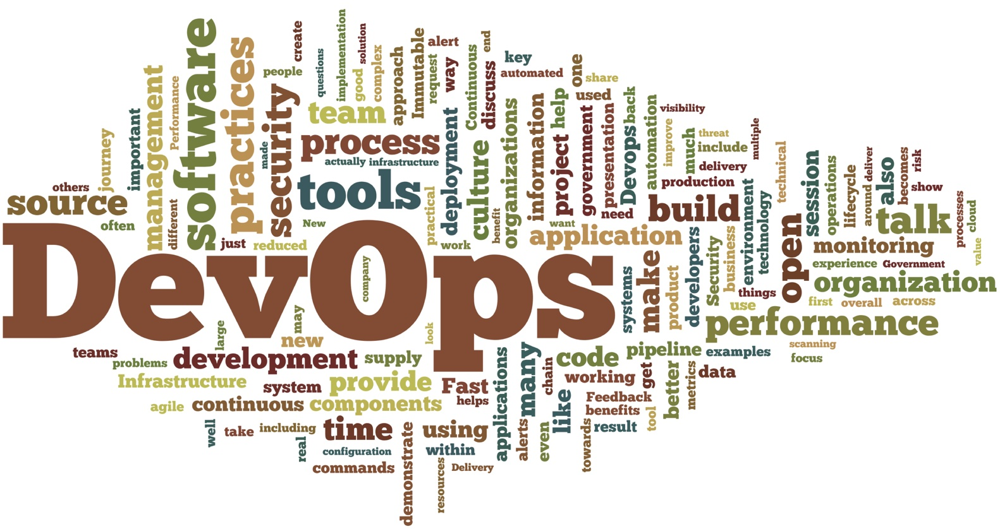

<% @eventhome = @page.directory.split(File::SEPARATOR)[0..1].join(File::SEPARATOR) %>

## DevOpsDays DC 2015


### A house divided against itself cannot stand.

**_Change is in session!_**
DevOpsDays DC was held **June 11 and 12, 2015** at the [US Patent and Trademark
Office](location) in Alexandria, Virginia. Read more about DevOpsDays DC in our latest
[press release.](http://www.prnewswire.com/news-releases/inaugural-devops-days-event-kicks-off-in-washington-dc-300057735.html)

## The Ayes Have It - DevOpsDays DC is a wrap!

The inaugural DevOpsDays DC is in the books, and was a resounding success.
**THANK YOU** to everyone who helped made it happen - our partners at
the USPTO, all of our sponsors, our talented and engaging speakers,
dedicated volunteers and organizers, and most importantly our 400+
attendees from the private and public sectors and everywhere in between.

If you missed the event, or if you made it to the event but missed
anything there, here are some links to help you get briefed:

* [The program](http://devopsdaysdc2015.busyconf.com/schedule)
* Some of what happened in Open Spaces: [Areas 1-4](openspaces-1234.jpg) and [Areas 5-8](openspaces-5678.jpg)
* [Video of the keynotes and ignites](https://livestream.com/uspto/DevOpsDay2015).
* [Etherpad](http://e.devopsdaysdc.org) for session notes, job postings,
and banter
* Some Twitter searches:
[#devopsdays](https://twitter.com/hashtag/devopsdays?src=hash),
[#doddc](https://twitter.com/hashtag/doddc?src=hash),
[@devopsdaysdc mentions](https://twitter.com/search?q=%40devopsdaysdc&src=savs&vertical=default&f=tweets),
[the main @devopsdaysdc feed](https://twitter.com/devopsdaysdc).

A special thanks to everyone who attended for helping us
provide a harassment-free conference experience
for _everyone_. Our [code of conduct](http://www.devopsdays.org/events/2015-washington-dc/conduct/)
was understood and respected, and we greatly appreciate it! If you do
have any comments or complaints after the fact, please let the organizers
know (see the bottom of the conduct page.)

Much as _some people_ are preparing for next year, so are we. With
DevOpsDays DC 2015 such a great event, how could we not do it again
in 2016? Stay tuned in the coming months for more details. In the
meantime, if you're looking for more DevOpsDays, there are
[several upcoming events](http://www.devopsdays.org/) in both CONUS
and OCONUS - road trip!

## Why Attend?

Whether you're in government, academia, or the private sector,
_DevOpsDays is for you._

Whether you're in operations, development, QA, security, or any other department,
_DevOpsDays is for you._

Whether you want to learn about DevOps, share your experiences, or just talk shop
with DevOps practitioners, _DevOpsDays is for you._

DevOpsDays are a mix of keynote sessions and [open spaces](http://en.wikipedia.org/wiki/Open_Space_Technology).  Final speaker selection is underway.  The keynotes and open spaces will include discussions on topics such as:



## About Washington, DC

If all you know of Washington, DC is what you see on C-SPAN or _House of Cards_,
you're missing out. While its importance as the Nation's Capital and center of
government is undisputed, the "DMV" (District, Maryland, and Virginia) is also home
to innovative startups, leading universities, and world-class arts and culture.

If you're local, you already know the diversity of our DevOps community. If you're
coming in from elsewhere, prepare to mix with DevOps leaders from every segment of
our vibrant local scene. And, of course, take some time to check out everything else
the Nation's Capital has to offer, from the many free Smithsonian museums to great
food and drink!

For those coming from out of town, there are flights from just about everywhere to
our three local airports, and there are several hotels nearby. More details
are on the [location page](location).
